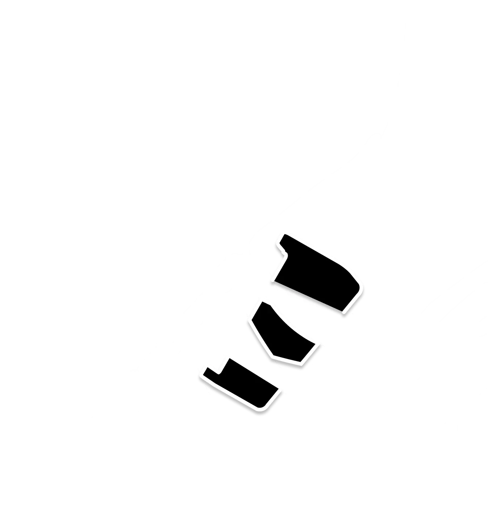
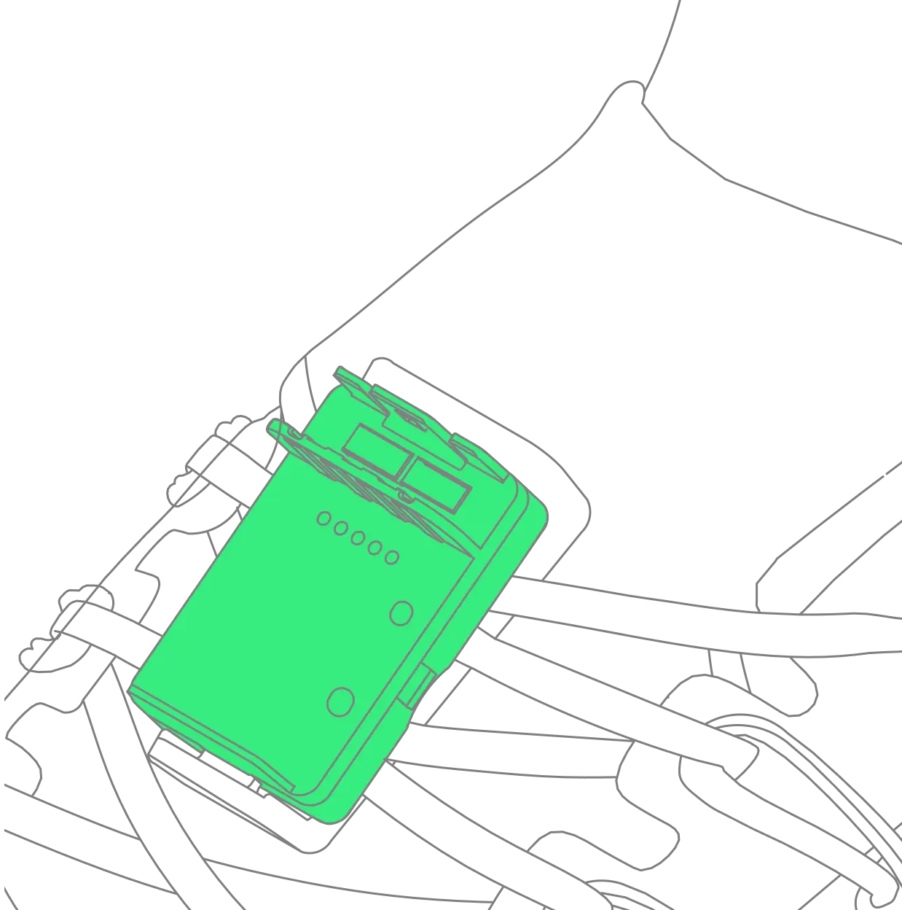
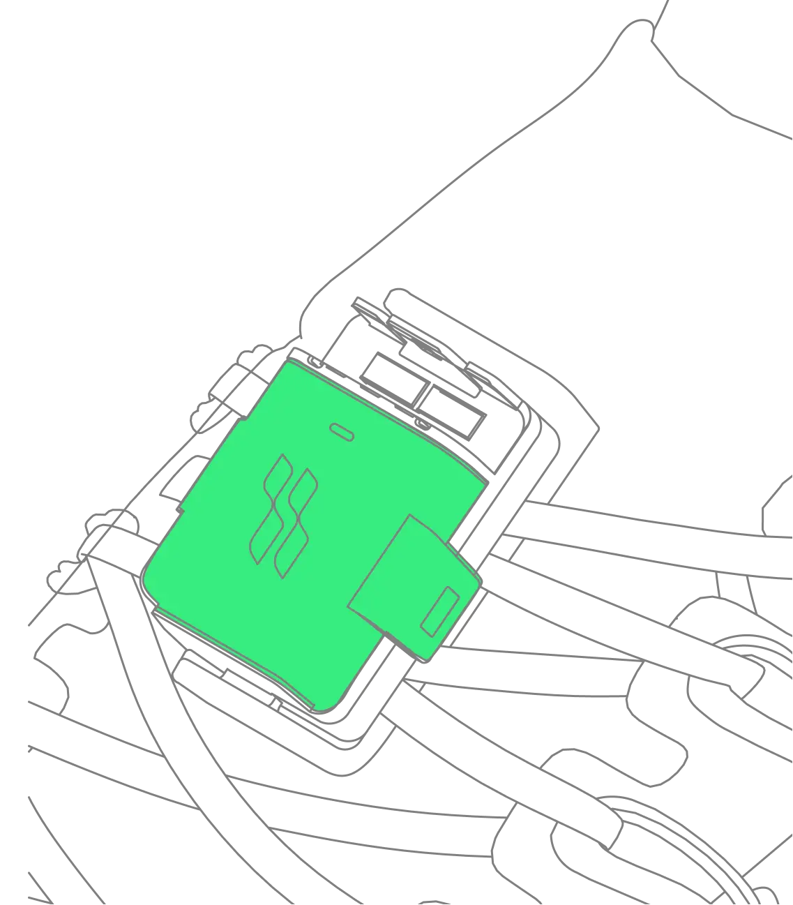
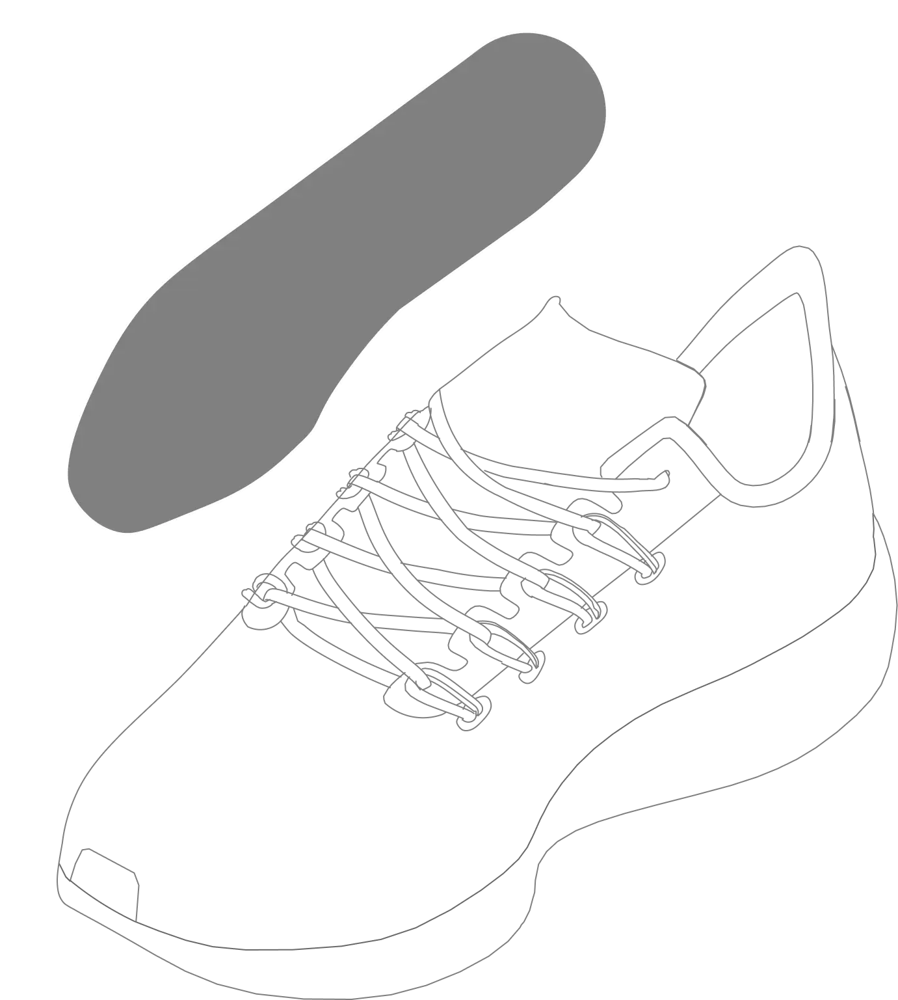
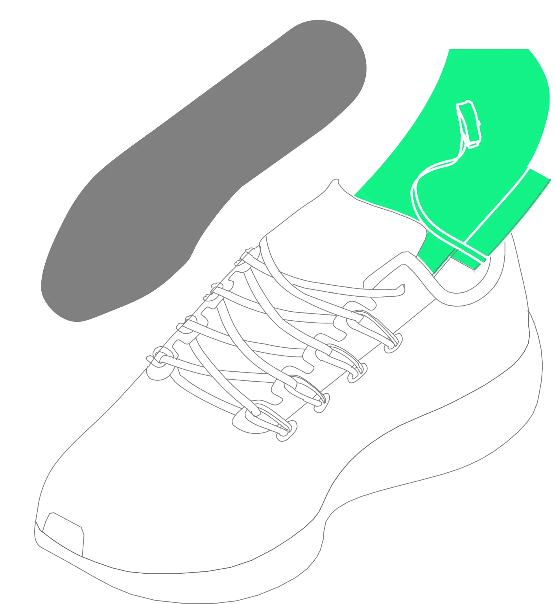
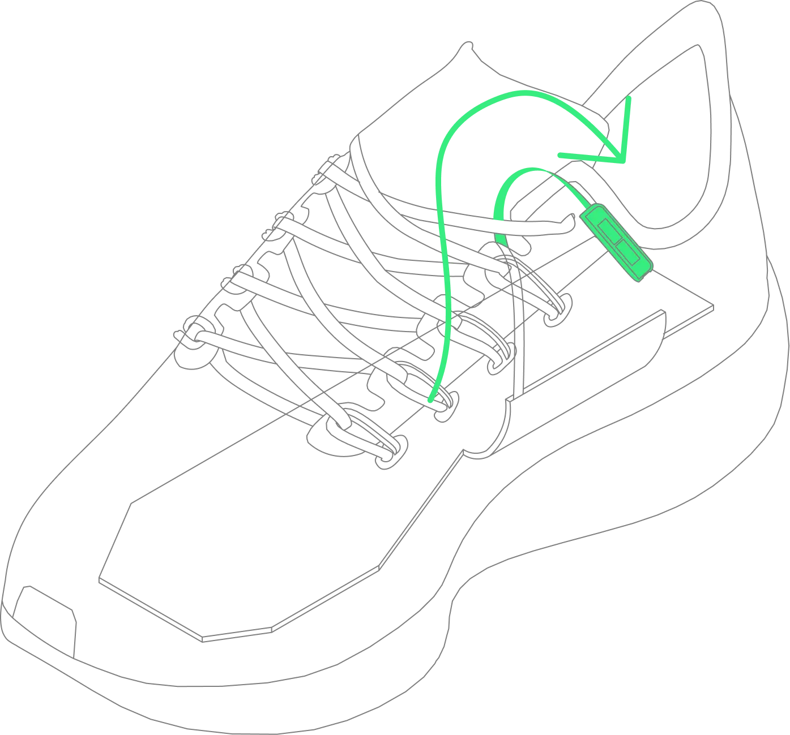
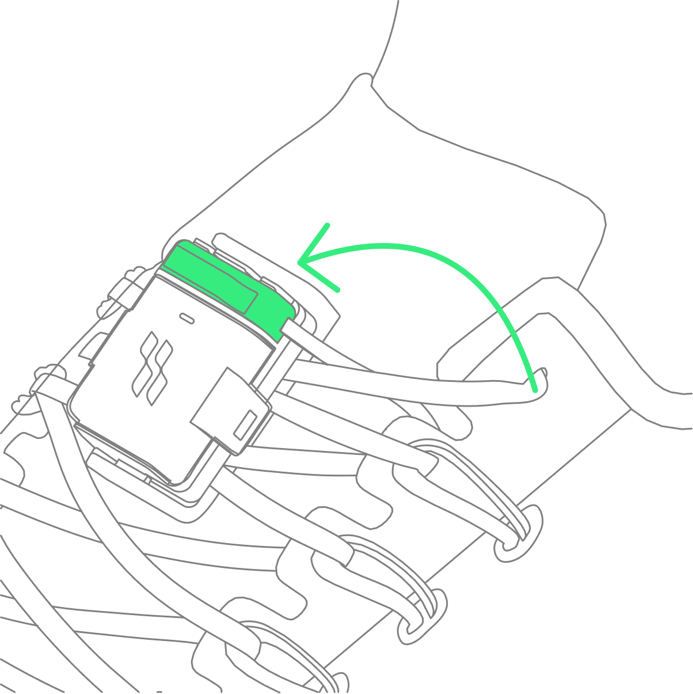
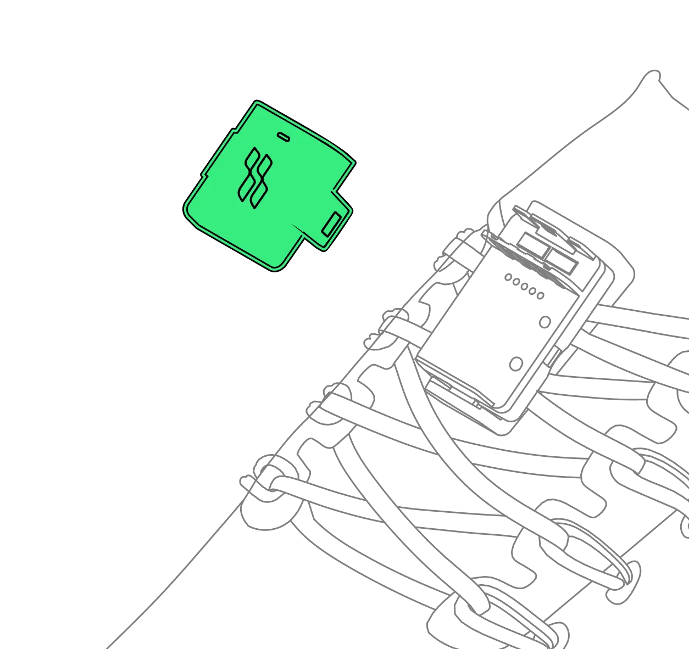
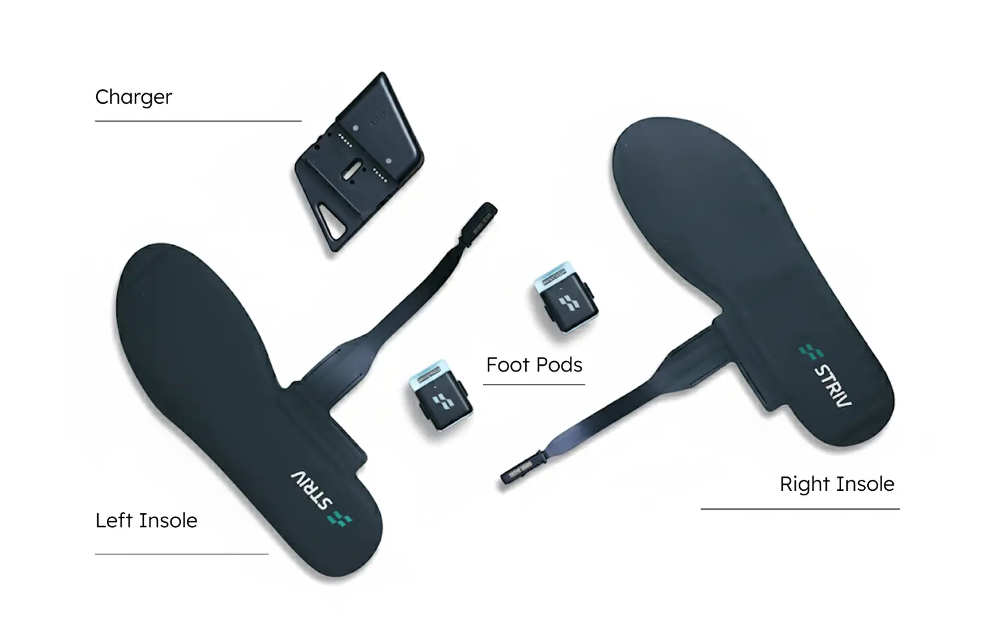
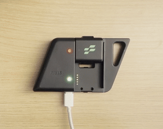

Start Using Your Insole

Slide Clip Under Laces
Position the wider side closer to your ankle.

Attach Pod to Clip
Snap the pod onto the clip until you feel it lock into place. You will hear a click when it is secure.

Attach Battery to Pod
Align battery with pod and push it in until you hear a click.

Remove Your Current Insole
Take out your shoe's existing insole to make room for the sensor.

Place Sensors Under Insole
Position sensors flat on the shoe bottom, then press the insole firmly on top.

Thread Cable Over Laces
Guide the cable over your tongue and under the laces. For shoes without a tongue, thread through the back.

Connect Sensor to Pod
Plug the sensor cable into the pod until it locks in place.

After Your Run: Disconnect Battery
Unplug the battery from the pod to maximize battery life.
Getting Started
Helpful Resources
- iOS Early Access (TestFlight) – Join our iOS early access group to get the latest version
- Android App (Google Play) – Join Open Testing to get the latest version
- These links install the newest, lab-validated version of the Striv app. If you already have the app, update to the latest version for the best experience.
What's in the Box

Connecting Your Insole
First-Time Setup
- Put on your smart insole as described above.
- Enable Bluetooth and Location on your smartphone.
- Download the latest Striv app using the iOS (TestFlight) or Android (Google Play) links in the Getting Started section above.
- Open the Striv app and create an account or log in to your existing account.
Pair Your Insoles (Insole Control Center)
Before your first run you'll pair the left and right pods once. The app remembers them, so you won't need to repeat this — your insoles reconnect automatically next time.
- On the home screen, tap the insole status badge (the two-dot indicator showing "Not paired") to open the Insole Control Center.
- Tap "Pair Left Pod", then "Start scanning".
- Select your pod from the list of discovered devices.
- When asked "Which side is this pod?", choose "Left" and tap "Pair".
- Wait for the "Paired" confirmation, then tap "Done".
- Repeat with "Pair Right Pod" for the right side.
- Once both sides are paired, the badge shows "Live" and you're ready to run.
Start a Run
- Tap "GO" on the bottom bar (or pick a run type from the home screen).
- On the run setup screen, tap "Start". Recording begins after a short countdown.
- During a run, tap "Insole" in the top header at any time to see the live connection status of each insole.
Charging Your Insole
- Remove the battery pod from your insole.
- Place the battery pod in the provided charging dock.
- Connect the charging dock to a power source (max 5V/1A).
- A full charge takes approximately 2-3 hours.
- The light will turn green charging is complete.
- Reinsert the charged battery pod into your insole.


Run Now, Sync Later
How It Works
- If you've previously calibrated your insoles:
- Simply put on your shoes with the insoles
- Start running - even if the LED is blinking blue (indicating no Bluetooth connection)
- LED Behavior: The blue blinking will automatically stop after approximately 1 minute of running activity, indicating the insole has entered data collection mode
- Your insole will collect data during your run even without phone connection
- After your run:
- Please do not take off your battery pod before syncing your data
- Open the Striv app
- Go to your run History and Sync your data
- During sync, the LED may briefly show activity as data transfers
This feature only works after you've completed the initial calibration process. First-time users must still connect and calibrate their insoles before running.
Understanding LED Indicators
Troubleshooting
Insole Won't Connect
- Ensure Bluetooth is enabled on your smartphone.
- Verify the insole is charged and powered on.
- Restart the Striv app.
- If problems persist, try restarting your smartphone.
Inaccurate Data
- Recalibrate the insole.
- Ensure the insole is properly positioned in your shoe.
- Check for any physical damage to the insole.
LED Continuously Blinks Blue
- Check that Bluetooth is enabled on your smartphone.
- Verify the Striv app is open and running.
- Try moving your smartphone closer to the insole.
Frequently Asked Questions (FAQ)
Is there a left and right side for the sensors?
Yes. Look for "L" and "R" on the adapter — this indicates which foot and orientation.
How do I start a run?
- Make sure both pods are fully charged and connected.
- Open the app → Tap "Start Running" → Wait for both L/R to show as connected.
- Tap "Start" → Run → Tap "End Run" to save.
My pod isn't connecting — what should I do?
- Make sure you've enabled Bluetooth for the Striv App.
- Check if the blue light is blinking on the battery pod:
- If not blinking, try charging the battery before using.
- If charged, make sure it's fully clicked into the adapter.
- Make sure the sensor adaptor is fully connected and you hear a sound of clicking when you push it in.
- Avoid twisting or pulling the cable.
- Try restarting the app and reconnecting via the "Start Running" screen.
If blinking blue and still not connecting, please submit this form with your email and details. Check your emails for updates from our support team.
My calibration doesn't seem to work.
- Open "Insole Status" in the app and try recalibrating.
- Ensure you're standing still during calibration.
- Try unplugging/replugging the adapter and restarting the app.
- Check if there was a sound of clicking when you installed the sensor adapter.
When checking calibration:
- Check "mean pressure" in insole status when you step on it vs. when you don't.
- If change is less than 10, the sensors might be broken. Please check usage guidelines and fill out our after-sales service request form.
- If there's a huge change (e.g., 100+ from ~10), please submit this debug form with your email and details.
Sensor calibrated, but no data was received
- Ensure you have the latest app version.
- Check that your iOS/Android system is updated to the newest version.
- Verify the sensor adapter is fully connected with a clicking sound.
- Check Insole Status for pressure readings during use.
Please submit this form with details if problem persists.
Can I use the sensors with my own insoles?
Yes — sensor-only kits are designed to go under your existing insoles.
One of my parts is missing or damaged — what now?
Please fill out our After-Sales Service Request form and we'll help resolve the issue.
I'm experiencing software bugs (e.g., elevation, distance error)
Please use our Bug Report Form with detailed information about the issue you're experiencing.
Be sure to include your device model, app version, and steps to reproduce the bug.
Technical Specifications
- Battery: Rechargeable lithium-ion
- Battery Life: 15-20 hours of active use
- Connectivity: Bluetooth Low Energy (BLE)
- Sensors: Pressure array, IMU (motion), barometric (elevation), temperature
- Water Resistance: Splash resistant (not waterproof)
- Temperature Range: -40°C to +85°C (-40°F to +185°F)
Support and Contact
For additional support:
- Visit our website: www.striv.run
- Email: info@striv.run
Account Management
To delete your account:
- Open the Striv app
- Navigate to Personal Settings
- Select "Delete Your Account"
Disclaimer
Medical Disclaimer: The Striv Smart Insole is not a medical device and is not intended to diagnose, treat, cure, or prevent any disease or health condition. The information provided by the device and companion app is for informational and recreational purposes only.
Accuracy of Information: While we strive to provide accurate biomechanical data, the measurements and analyses provided by the Striv Smart Insole should not be considered as precise as clinical-grade equipment. Environmental factors, improper calibration, or incorrect usage may affect the accuracy of the data.
Consultation with Healthcare Professionals: Always consult with qualified healthcare professionals regarding any medical questions or concerns. Do not make changes to your exercise routine, footwear, or treatment plans based solely on data from the Striv Smart Insole without consulting appropriate medical professionals.
Assumption of Risk: By using the Striv Smart Insole, you acknowledge and assume all risks associated with physical activity and the use of the device. Striv Technologies is not responsible for any injuries or damages that may occur during use.
Privacy and Data: Please refer to our Privacy Policy for information on how we collect, use, and protect your data. By using the Striv Smart Insole and companion app, you consent to the data practices described in our Privacy Policy.
Product Updates: Specifications, features, and capabilities of the Striv Smart Insole may change with firmware or app updates. This manual represents the product at the time of publication.